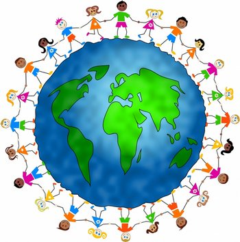
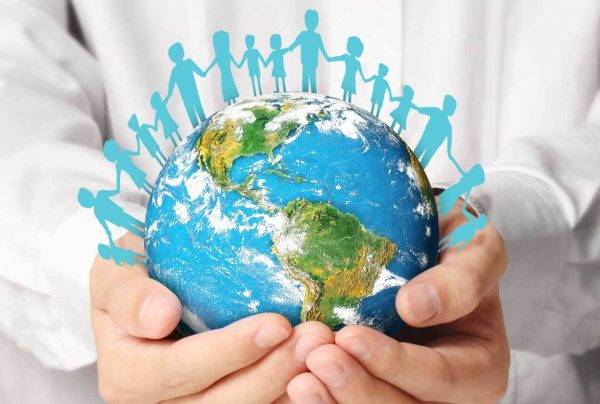

Sustentabilidade Social é um dos pilares da Sustentabilidade, não trata-se apenas de questões ambientais, mas também de questões econômicas e sociais. Tem como principal objetivo melhorar a qualidade de vida de forma que as gerações passadas não usem todos os recursos disponíveis das gerações futuras. Estas ações deve diminuir as desigualdades sociais, ampliar os direitos e garantir acesso aos serviços, com mais enfase no quesito educação e saúde, que visam possibilitar as pessoas a ter um perfeito acesso a cidadania.
 